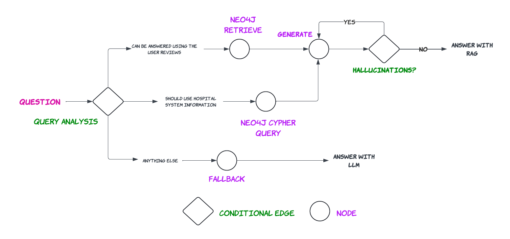
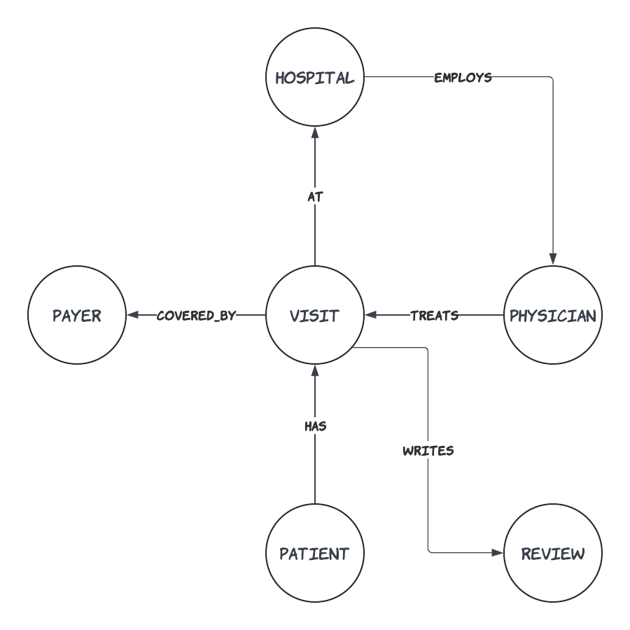
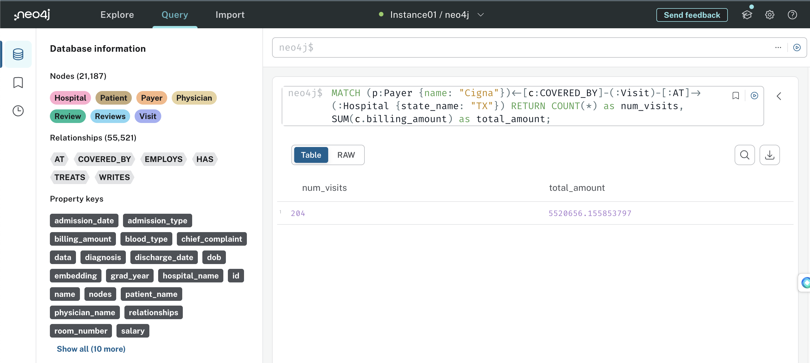

10. Putting it all together with Neo4J#
In this section we put everything we learned in previous sections into practice by creating an LLM agent that will answer user questions about a hospital. To do that we use two datasources: a Neo4J vector indices that contains documents on user reviews of different hospitals and a Neo4J graph database containing the information about those hospitals, visits, doctors, payments, etc. Our RAG pipeline will be correctly re-direct the user query to each datasource and will answer the question in the end. Let’s begin!
 |
|---|
RAG based hospital informtion system |
%load_ext dotenv
%dotenv secrets/secrets.env
import os
from langchain.prompts import PromptTemplate
from langchain_core.output_parsers import StrOutputParser
from langchain_openai import ChatOpenAI, OpenAIEmbeddings
from langchain.pydantic_v1 import BaseModel, Field
from langchain.prompts import ChatPromptTemplate
from langchain import hub
from typing import Literal
from neo4j import GraphDatabase
os.environ["LANGCHAIN_PROJECT"] = "hospital-system"
Here we use a processed Kaggle dataset by Harrison Hoffman. The processed dataset contains 6 .csv files.
hospitals.csv: Contains the names of the hospitals, the state that the hospital is located, and a unique id.physicians.csv: Contains information about physicians including their names, date of birth, graduation year, medical school, and salary.payers.csv: Contains names and unique ids of five different insuarance companies that paid bills of patients.patients.csv: Contains information about patients and their sex, date of birth, blood type, identified by a unique id.visits.csv: This file connects all the mentioned files with infomation about each patient’s visits, date of admission, billing amount, room number, admission type, discharge date, test results, visit id, physician id,payer id, hospital id, chief complaint, treatment description, primary diagnosis, and visit status.reviews.csv: Contains user reviews posted by patients in their respective vists treated by a physician in a hospital.
Next we use the above CSV files and relationships between them are used to create a Neo4J graph in Neo4J AuraDB. You can create an account for free and create a DB instance hosted in GCP. You have to download the login information need for authentication through neo4j python library and langchain. The login information should contain:
NEO4J_URI
NEO4J_USERNAME
NEO4J_PASSWORD
AURA_INSTANCEID
AURA_INSTANCENAME
The graph we are going to build is as follows.
 |
|---|
Neo4J Graph for the hospital information system |
Each circle represents a “Node” and each arrow represents a “Relationship”.
For instance, each Patient HAS a Visit AT a Hospital that EMPLOYS a Physician who TREATS in a Visit COVERED_BY a Payer. A Patient who completed a Visit WRITES a Review in the end.
Now, we create the aforementioned nodes and relationships between them (i.e., the graph) in AuraDB using the Cypher query language, and populate it with the information in CSV files.
See also
For more information about the Cypher Query Language refer the documentation. Python SDK documentation can be found here.
NODES = ["Hospital", "Payer", "Physician", "Patient", "Visit", "Reviews"]
def _set_uniqueness_constraints(tx, node):
query = f"""CREATE CONSTRAINT IF NOT EXISTS FOR (n:{node})
REQUIRE n.id IS UNIQUE;"""
_ = tx.run(query, {})
driver = GraphDatabase.driver(
os.getenv('NEO4J_URI'),
auth=(os.getenv('NEO4J_USERNAME'), os.getenv('NEO4J_PASSWORD'))
)
with driver.session(database="neo4j") as session:
for node in NODES:
session.execute_write(_set_uniqueness_constraints, node)
HOSPITALS = "https://raw.githubusercontent.com/sakunaharinda/ragatouille/main/data/hospitals.csv"
with driver.session(database="neo4j") as session:
query = f"""
LOAD CSV WITH HEADERS
FROM '{HOSPITALS}' AS hospitals
MERGE (h:Hospital {{id: toInteger(hospitals.hospital_id),
name: hospitals.hospital_name,
state_name: hospitals.hospital_state}});
"""
_ = session.run(query, {})
PAYERS = "https://raw.githubusercontent.com/sakunaharinda/ragatouille/main/data/payers.csv"
with driver.session(database="neo4j") as session:
query = f"""
LOAD CSV WITH HEADERS
FROM '{PAYERS}' AS payers
MERGE (p:Payer {{id: toInteger(payers.payer_id),
name: payers.payer_name}});
"""
_ = session.run(query, {})
PHYSICIANS = "https://raw.githubusercontent.com/sakunaharinda/ragatouille/main/data/physicians.csv"
with driver.session(database="neo4j") as session:
query = f"""
LOAD CSV WITH HEADERS
FROM '{PHYSICIANS}' AS physicians
MERGE (p:Physician {{id: toInteger(physicians.physician_id),
name: physicians.physician_name,
dob: physicians.physician_dob,
grad_year: physicians.physician_grad_year,
school: physicians.medical_school,
salary: toFloat(physicians.salary)
}});
"""
_ = session.run(query, {})
VISITS = "https://raw.githubusercontent.com/sakunaharinda/ragatouille/main/data/visits.csv"
with driver.session(database="neo4j") as session:
query = f"""
LOAD CSV WITH HEADERS FROM '{VISITS}' AS visits
MERGE (v:Visit {{id: toInteger(visits.visit_id),
room_number: toInteger(visits.room_number),
admission_type: visits.admission_type,
admission_date: visits.date_of_admission,
test_results: visits.test_results,
status: visits.visit_status
}})
ON CREATE SET v.chief_complaint = visits.chief_complaint
ON MATCH SET v.chief_complaint = visits.chief_complaint
ON CREATE SET v.treatment_description = visits.treatment_description
ON MATCH SET v.treatment_description = visits.treatment_description
ON CREATE SET v.diagnosis = visits.primary_diagnosis
ON MATCH SET v.diagnosis = visits.primary_diagnosis
ON CREATE SET v.discharge_date = visits.discharge_date
ON MATCH SET v.discharge_date = visits.discharge_date
"""
_ = session.run(query, {})
PATIENTS = "https://raw.githubusercontent.com/sakunaharinda/ragatouille/main/data/patients.csv"
with driver.session(database="neo4j") as session:
query = f"""
LOAD CSV WITH HEADERS
FROM '{PATIENTS}' AS patients
MERGE (p:Patient {{id: toInteger(patients.patient_id),
name: patients.patient_name,
sex: patients.patient_sex,
dob: patients.patient_dob,
blood_type: patients.patient_blood_type
}});
"""
_ = session.run(query, {})
REVIEWS = "https://raw.githubusercontent.com/sakunaharinda/ragatouille/main/data/reviews.csv"
with driver.session(database="neo4j") as session:
query = f"""
LOAD CSV WITH HEADERS
FROM '{REVIEWS}' AS reviews
MERGE (r:Review {{id: toInteger(reviews.review_id),
text: reviews.review,
patient_name: reviews.patient_name,
physician_name: reviews.physician_name,
hospital_name: reviews.hospital_name
}});
"""
_ = session.run(query, {})
After the nodes are populated, then we create relationships namely AT, HAS, COVERED_BY, EMPLOYS, TREATS, and WRITES.
with driver.session(database="neo4j") as session:
query = f"""
LOAD CSV WITH HEADERS FROM '{VISITS}' AS visits
MATCH (source: `Visit` {{ `id`: toInteger(trim(visits.visit_id)) }})
MATCH (target: `Hospital` {{ `id`: toInteger(trim(visits.hospital_id))}})
MERGE (source)-[r: `AT`]->(target)
"""
_ = session.run(query, {})
with driver.session(database="neo4j") as session:
query = f"""
LOAD CSV WITH HEADERS FROM '{VISITS}' AS visits
MATCH (source: `Patient` {{ `id`: toInteger(visits.patient_id) }})
MATCH (target: `Visit` {{ `id`: toInteger(visits.visit_id) }})
MERGE (source)-[: `HAS`]->(target)
"""
_ = session.run(query, {})
with driver.session(database="neo4j") as session:
query = f"""
LOAD CSV WITH HEADERS FROM '{VISITS}' AS visits
MATCH (source: `Visit` {{ `id`: toInteger(visits.visit_id) }})
MATCH (target: `Payer` {{ `id`: toInteger(visits.payer_id) }})
MERGE (source)-[covered_by: `COVERED_BY`]->(target)
ON CREATE SET
covered_by.service_date = visits.discharge_date,
covered_by.billing_amount = toFloat(visits.billing_amount)
"""
_ = session.run(query, {})
with driver.session(database="neo4j") as session:
query = f"""
LOAD CSV WITH HEADERS FROM '{VISITS}' AS visits
MATCH (source: `Hospital` {{ `id`: toInteger(visits.hospital_id) }})
MATCH (target: `Physician` {{ `id`: toInteger(visits.physician_id) }})
MERGE (source)-[: `EMPLOYS`]->(target)
"""
_ = session.run(query, {})
with driver.session(database="neo4j") as session:
query = f"""
LOAD CSV WITH HEADERS FROM '{VISITS}' AS visits
MATCH (source: `Physician` {{ `id`: toInteger(visits.physician_id) }})
MATCH (target: `Visit` {{ `id`: toInteger(visits.visit_id) }})
MERGE (source)-[: `TREATS`]->(target)
"""
_ = session.run(query, {})
with driver.session(database="neo4j") as session:
query = f"""
LOAD CSV WITH HEADERS FROM '{REVIEWS}' AS reviews
MATCH (source: `Visit` {{ `id`: toInteger(reviews.visit_id) }})
MATCH (target: `Review` {{ `id`: toInteger(reviews.review_id) }})
MERGE (source)-[: `WRITES`]->(target)
"""
_ = session.run(query, {})
After creating our graph, you will be able to see all the nodes and relationships in the AuraDB dashboard. Also you can execute Cypher queries against your graph and get results.
For instance, if you want to know the total number visits in all hospitals in Texas that were paid by the company “Cigna” and the total billing amount, you can execute,
MATCH (p:Payer {name: "Cigna"})<-[c:COVERED_BY]-(:Visit)-[:AT]->(:Hospital {state_name: "TX"}) RETURN COUNT(*) as num_visits, SUM(c.billing_amount) as total_amount;
Your result can be seen as follows in the AuraDB dashboard.
 |
|---|
Cypher query execution against the built graph |
After we are satisfied with the graph, we can then create a Neo4jVector index through langchain to embedd the user reviews (which is a node in the graph) with properties review, physician_name, hospital_name, patient_name. Vector search indices were released as a public beta in Neo4j 5.11. They allow you to run semantic queries directly on your graph. This is really convenient for your chatbot because you can store review embeddings in the same place as your structured hospital system data. Here we have to provide the node_label that we are going to embed, a name to the index, and the embedding in addition to the information required for authentication (username, password, and url). Finally we can create the retriever as we have done many times earlier.
from langchain.vectorstores.neo4j_vector import Neo4jVector
neo4j_vector_index = Neo4jVector.from_existing_graph(
embedding=OpenAIEmbeddings(),
username=os.getenv('NEO4J_USERNAME'),
password=os.getenv('NEO4J_PASSWORD'),
url=os.getenv('NEO4J_URI'),
node_label="Review",
index_name="review_vector_index",
text_node_properties=[
"review", "physician_name", "hospital_name", "patient_name"
],
embedding_node_property="embedding"
)
review_retriever = neo4j_vector_index.as_retriever()
Then we can create our qa_chain that answers the user questions based on the given cypher query results or user reviews. Here note that, we do not need to execute any cypher query as we do not need to directly query a particular review, but use the results from the query or reviews collectively to answer a question.
question = "What have patients said about hospital efficiency?"
# review_template = """
# You are an assistant for answering questions based on the user reviews about an hospital.
# Use the following pieces of retrieved context to answer the question.
# Be detailed as possible.
# If you don't know the answer, just say that you don't know.
# \nQuestion: {question} \nContext: {context} \nAnswer:"
# """
qa_prompt = hub.pull("rlm/rag-prompt")#
llm = ChatOpenAI(model="gpt-4", temperature=0)
qa_chain = qa_prompt | llm | StrOutputParser()
docs = review_retriever.invoke(question)
qa_chain.invoke({"question": question, "context": docs})
'Patients have given mixed reviews about hospital efficiency. They appreciated the caring nursing staff, professionalism of doctors, and clean environment. However, they were disappointed with the lack of vegetarian options, lack of communication about treatment plans, constant interruptions during the night, and confusing administrative processes.'
Then we create the chain that generates a cypher query based on the user question, that can be used to extract information from the graph database. To do that we use langchain’s GraphCypherQAChain.
from langchain.chains import GraphCypherQAChain
from langchain_community.graphs import Neo4jGraph
graph = Neo4jGraph(enhanced_schema=True)
You can visualize the graph’s schema, which acts as the context when translating natural language questions into Cypher queries.
graph.refresh_schema()
print(graph.schema)
Node properties:
- **Hospital**
- `id: INTEGER` Min: 0, Max: 29
- `name: STRING` Example: "Wallace-Hamilton"
- `state_name: STRING` Available options: ['CO', 'NC', 'FL', 'GA', 'TX']
- **Payer**
- `id: INTEGER` Min: 0, Max: 4
- `name: STRING` Available options: ['Medicaid', 'UnitedHealthcare', 'Aetna', 'Cigna', 'Blue Cross']
- **Physician**
- `id: INTEGER` Min: 0, Max: 499
- `name: STRING` Example: "Joseph Johnson"
- `school: STRING` Example: "Johns Hopkins University School of Medicine"
- `dob: STRING` Example: "1970-02-22"
- `grad_year: STRING` Example: "2000-02-22"
- `salary: FLOAT` Min: 198347.15752030822, Max: 394259.00931863394
- **Patient**
- `id: INTEGER` Min: 0, Max: 9999
- `name: STRING` Example: "Tiffany Ramirez"
- `dob: STRING` Example: "1994-10-06"
- `blood_type: STRING` Available options: ['O+', 'A-', 'O-', 'AB+', 'A+', 'B-', 'AB-', 'B+']
- `sex: STRING` Available options: ['Female', 'Male']
- **Visit**
- `id: INTEGER` Min: 0, Max: 9999
- `admission_date: STRING` Example: "2022-11-17"
- `room_number: INTEGER` Min: 101, Max: 500
- `admission_type: STRING` Available options: ['Elective', 'Emergency', 'Urgent']
- `test_results: STRING` Available options: ['Inconclusive', 'Normal', 'Abnormal']
- `status: STRING` Available options: ['DISCHARGED', 'OPEN']
- `discharge_date: STRING` Example: "2022-12-01"
- `chief_complaint: STRING` Example: "Persistent cough and shortness of breath"
- `treatment_description: STRING` Example: "Prescribed a combination of inhaled bronchodilator"
- `diagnosis: STRING` Example: "J45.909 - Unspecified asthma, uncomplicated"
- **Review**
- `id: INTEGER` Min: 0, Max: 1004
- `physician_name: STRING` Example: "Laura Brown"
- `patient_name: STRING` Example: "Christy Johnson"
- `text: STRING` Example: "The medical staff at the hospital were incredibly "
- `hospital_name: STRING` Example: "Wallace-Hamilton"
Relationship properties:
- **COVERED_BY**
- `service_date: STRING` Example: "2019-01-13"
- `billing_amount: FLOAT` Example: "48391.14147288998"
The relationships:
(:Hospital)-[:EMPLOYS]->(:Physician)
(:Hospital)-[:COVERED_BY]->(:Physician)
(:Physician)-[:TREATS]->(:Visit)
(:Patient)-[:HAS]->(:Visit)
(:Visit)-[:AT]->(:Hospital)
(:Visit)-[:COVERED_BY]->(:Payer)
(:Visit)-[:WRITES]->(:Review)
To assist the LLM in generating correct Cypher query we also can provide a few-shot prompt (cypher_generation_prompt).
cypher_generation_template = """
Task:
Generate Cypher query for a Neo4j graph database.
Instructions:
Use only the provided relationship types and properties in the schema.
Do not use any other relationship types or properties that are not provided.
Schema:
{schema}
Note:
Do not include any explanations or apologies in your responses.
Do not respond to any questions that might ask anything other than
for you to construct a Cypher statement. Do not include any text except
the generated Cypher statement. Make sure the direction of the relationship is
correct in your queries. Make sure you alias both entities and relationships
properly. Do not run any queries that would add to or delete from
the database. Make sure to alias all statements that follow as with
statement (e.g. WITH v as visit, c.billing_amount as billing_amount)
If you need to divide numbers, make sure to
filter the denominator to be non zero.
Examples:
# Who is the oldest patient and how old are they?
MATCH (p:Patient)
RETURN p.name AS oldest_patient,
duration.between(date(p.dob), date()).years AS age
ORDER BY age DESC
LIMIT 1
# Which physician has billed the least to Cigna
MATCH (p:Payer)<-[c:COVERED_BY]-(v:Visit)-[t:TREATS]-(phy:Physician)
WHERE p.name = 'Cigna'
RETURN phy.name AS physician_name, SUM(c.billing_amount) AS total_billed
ORDER BY total_billed
LIMIT 1
# Which state had the largest percent increase in Cigna visits
# from 2022 to 2023?
MATCH (h:Hospital)<-[:AT]-(v:Visit)-[:COVERED_BY]->(p:Payer)
WHERE p.name = 'Cigna' AND v.admission_date >= '2022-01-01' AND
v.admission_date < '2024-01-01'
WITH h.state_name AS state, COUNT(v) AS visit_count,
SUM(CASE WHEN v.admission_date >= '2022-01-01' AND
v.admission_date < '2023-01-01' THEN 1 ELSE 0 END) AS count_2022,
SUM(CASE WHEN v.admission_date >= '2023-01-01' AND
v.admission_date < '2024-01-01' THEN 1 ELSE 0 END) AS count_2023
WITH state, visit_count, count_2022, count_2023,
(toFloat(count_2023) - toFloat(count_2022)) / toFloat(count_2022) * 100
AS percent_increase
RETURN state, percent_increase
ORDER BY percent_increase DESC
LIMIT 1
# How many non-emergency patients in North Carolina have written reviews?
MATCH (r:Review)<-[:WRITES]-(v:Visit)-[:AT]->(h:Hospital)
WHERE h.state_name = 'NC' and v.admission_type <> 'Emergency'
RETURN count(*)
String category values:
Test results are one of: 'Inconclusive', 'Normal', 'Abnormal'
Visit statuses are one of: 'OPEN', 'DISCHARGED'
Admission Types are one of: 'Elective', 'Emergency', 'Urgent'
Payer names are one of: 'Cigna', 'Blue Cross', 'UnitedHealthcare', 'Medicare',
'Aetna'
A visit is considered open if its status is 'OPEN' and the discharge date is
missing.
Use abbreviations when
filtering on hospital states (e.g. "Texas" is "TX",
"Colorado" is "CO", "North Carolina" is "NC",
"Florida" is "FL", "Georgia" is "GA", etc.)
Make sure to use IS NULL or IS NOT NULL when analyzing missing properties.
Never return embedding properties in your queries. You must never include the
statement "GROUP BY" in your query. Make sure to alias all statements that
follow as with statement (e.g. WITH v as visit, c.billing_amount as
billing_amount)
If you need to divide numbers, make sure to filter the denominator to be non
zero.
The question is:
{question}
"""
cypher_generation_prompt = PromptTemplate(
input_variables=["schema", "question"], template=cypher_generation_template
)
After defining the cypher generation prompt we create a graph_query_chain that translates the user question into a Cypher query, executes it against the database, and returns the answer. You can set the verbose as True, if you want to see the intermediate steps like the generated query.
graph_query_chain = GraphCypherQAChain.from_llm(
llm,
graph=graph,
validate_cypher=True,
cypher_prompt=cypher_generation_prompt,
verbose=False,
return_intermediate_steps=True
)
question = "Who are the physicians who treated patients that have O- blood type?"
result = graph_query_chain.invoke({'query': question})
intermediate_results = result['intermediate_steps']
qa_chain.invoke({"question": question, "context": intermediate_results})
'The physicians who treated patients with O- blood type include Jeffrey Williams, Leslie Williams, Luis Powell MD, Taylor Williams PhD, Nancy Nichols, Kyle Campbell, Abigail Cummings, Nathan Smith, Daniel Morgan II, and Charles Kim.'
Chain to answer when fallback happens.
fallback_prompt = ChatPromptTemplate.from_template(
"""
You are an assistant for question-answering tasks. Answer the question based upon your knowledge. Use three sentences maximum and keep the answer concise.\n\n
Question: {question}
"""
)
fallback_chain = fallback_prompt | llm | StrOutputParser()
Query router that does the query analysis and re-direct the user question either to the Neo4J vector index, Neo4J graph database, or to the fallback.
class QueryRouter(BaseModel):
"""Routes the question to either the vectorstore or the graph database"""
datasource: Literal['vectorstore', 'graph', 'fallback'] = Field(...,description="The datasource to use for answering the user question. If the user question can be answered using the reviews about the hospital, the datasource should be set to 'vectorstore'. If the question should be answered using the information from a databse containing information about hospitals that a company manages, the datasource should be set to 'graph'. If the question can be answered using LLM's internal knowledge, the datasource should be set to 'fallback'")
question = "How is the patient safety in the hospital?"
query_llm = llm.with_structured_output(QueryRouter)
query_router_prompt = ChatPromptTemplate.from_template(
"""You are an expert at routing a user question to a vectorstore or to a graph database containing information from a hospital system. The vectorstore contains documents related to the user reviews of a hospital.
Use the vectorstore for questions that can be answered using peoples' opinions on the hospital. Otherwise, use graph to answer questions using the graph database containing information from a company database that manages several hospitals. If the question can be answered using LLM's internal knowledge, use fallback.\n\n
Question: {question}"""
)
query_routing_chain = (query_router_prompt | query_llm)
print(f"{question}: {query_routing_chain.invoke({'question': question})}")
system_q = "What are the specialities of all the doctors in all the hospitals?"
print(f"{system_q}: {query_routing_chain.invoke({'question': system_q})}")
fallback_q = "What is the capital of France?"
print(f"{fallback_q}: {query_routing_chain.invoke({'question': fallback_q})}")
How is the patient safety in the hospital?: datasource='vectorstore'
What are the specialities of all the doctors in all the hospitals?: datasource='graph'
What is the capital of France?: datasource='fallback'
Hallucination evaluator checks whether or not the generated answer is grounded by the facts.
class HallucinationEvaluator(BaseModel):
"""Binary score for hallucination present in generation answer."""
grade: str = Field(...,
description="Answer is grounded in the facts, 'yes' or 'no'"
)
hallucination_llm = llm.with_structured_output(HallucinationEvaluator)
hallucination_prompt = ChatPromptTemplate.from_template(
"""
You are a grader assessing whether an LLM generation is grounded in / supported by a set of retrieved facts. \n
Give a binary score 'yes' or 'no'. 'Yes' means that the answer is grounded in / supported by the set of facts.\n\n
Set of facts: {documents} \n\n LLM generation: {generation}
"""
)
hallucination_chain = hallucination_prompt | hallucination_llm
generation = qa_chain.invoke({"question": question, "context": docs})
n_question = "What are the specialities of all the doctors in all the hospitals?"
n_docs = review_retriever.invoke(n_question)
hallucination_chain.invoke({"documents": n_docs, "generation": generation})
HallucinationEvaluator(grade='no')
Graph state definition.
from typing_extensions import TypedDict
from typing import List
class GraphState(TypedDict):
"""
Represents the state of our graph.
Attributes:
question: question
generation: LLM generation
documents: list of documents
"""
question: str
generation: str
documents: List[str]
Creating methods for the nodes.
def retrieve(state: GraphState):
"""
Retrieves the documents from the vectorstore.
Args:
state (dict): The current graph state
Returns:
state (dict): New key added to state, documents, that contains retrieved documents
"""
print(f"> 📃 Retrieving user reviews ...")
question = state["question"]
docs = review_retriever.invoke(question)
state["documents"] = docs
return state
def fallback(state):
"""
Fallback to LLM's internal knowledge.
Args:
state (dict): The current graph state
Returns:
state (dict): New key added to state, generation, that contains LLM generation
"""
print(f"> 👈 Fallback to LLM's internal knowledge ...")
question = state["question"]
generation = fallback_chain.invoke({"question": question})
state["generation"] = generation
return state
def query_graph(state):
"""
Queries the graph database.
Args:
state (dict): The current graph state
Returns:
state (dict): New key added to state, generation, that contains LLM generation
"""
print(f"> 📊 Querying the graph database ...")
question = state["question"]
generation = graph_query_chain.invoke({"query": question})
state["documents"] = generation['intermediate_steps']
return state
def generate(state):
"""
Generates an answer using the retrieved documents/query results.
Args:
state (dict): The current graph state
Returns:
state (dict): New key added to state, generation, that contains LLM generation
"""
print(f"> 🧠 Generating an answer ...")
question = state["question"]
docs = state["documents"]
generation = qa_chain.invoke({"question": question, "context": docs})
state["generation"] = generation
return state
Creating conditional edges.
def route_question(state):
"""
Route question to web search or RAG.
Args:
state (dict): The current graph state
Returns:
str: Next node to call
"""
question = state["question"]
route = query_routing_chain.invoke({"question": question})
if route.datasource == "vectorstore":
print("> 📚 Routing to the review database ...")
return "retrieve"
elif route.datasource == "graph":
print("> 📊 Routing to the graph database ...")
return "query_graph"
else:
print("> 👈 Routing to fallback...")
return "fallback"
def check_hallucination(state):
"""
Check if the generation is hallucinated.
Args:
state (dict): The current graph state
Returns:
str: Next node to call
"""
generation = state["generation"]
docs = state["documents"]
grounded = hallucination_chain.invoke({"documents": docs, "generation": generation})
if grounded.grade == "yes":
print("> ✅ \033[92mAnswer addresses the question\033[0m")
return "useful"
else:
print("> ❌ \033[91mGeneration is not grounded in the documents\033[0m")
return "not supported"
Creating the grpah with defined nodes and edges.
from langgraph.graph import END, StateGraph
workflow = StateGraph(GraphState)
workflow.add_node("retrieve", retrieve)
workflow.add_node("query_graph", query_graph)
workflow.add_node("fallback", fallback)
workflow.add_node("generate", generate)
workflow.set_conditional_entry_point(
route_question,
{
"retrieve": "retrieve",
"query_graph": "query_graph",
"fallback": "fallback"
}
)
workflow.add_edge('query_graph', 'generate')
workflow.add_edge('retrieve', 'generate')
workflow.add_conditional_edges(
'generate',
check_hallucination,
{
"useful": END,
"not supported": "generate"
}
)
workflow.add_edge('fallback', END)
app = workflow.compile()
def run_pipeline(question):
inputs = {"question": question}
for output in app.stream(inputs):
for key, value in output.items():
if key == 'generate' or key == 'fallback':
print()
print(f'Question: {inputs["question"]}')
print(f"Answer: {value['generation']}")
run_pipeline("What have patients said about hospital efficiency?")
> 📚 Routing to the review database ...
> 📃 Retrieving user reviews ...
> 🧠 Generating an answer ...
> ✅ Answer addresses the question
Question: What have patients said about hospital efficiency?
Answer: Patients have given mixed reviews about hospital efficiency. They appreciated the professionalism of the doctors and the caring nature of the nursing staff. However, they expressed concerns about the lack of communication regarding treatment plans, confusing administrative processes, and constant interruptions during the night.
Tha Langsmith trace for the above workflow will look like this.
# run_pipeline("Who are the physicians who treated patients that have O- blood type and who is the most frequent payer for them?")
run_pipeline("What is total number visits in all hospitals in Texas that were paid by the company 'Cigna'?")
> 📊 Routing to the graph database ...
> 📊 Querying the graph database ...
> 🧠 Generating an answer ...
> ✅ Answer addresses the question
Question: What is total number visits in all hospitals in Texas that were paid by the company 'Cigna'?
Answer: The total number of visits in all hospitals in Texas that were paid by the company 'Cigna' is 204.
The Langsmith trace for the above workflow will look like this.
run_pipeline("Hi! How are you doing today?")
> 👈 Routing to fallback...
> 👈 Fallback to LLM's internal knowledge ...
Question: Hi! How are you doing today?
Answer: As an artificial intelligence, I don't have feelings, but I'm here and ready to assist you. How can I help you today?
The Langsmith trace for the above workflow will look like this.